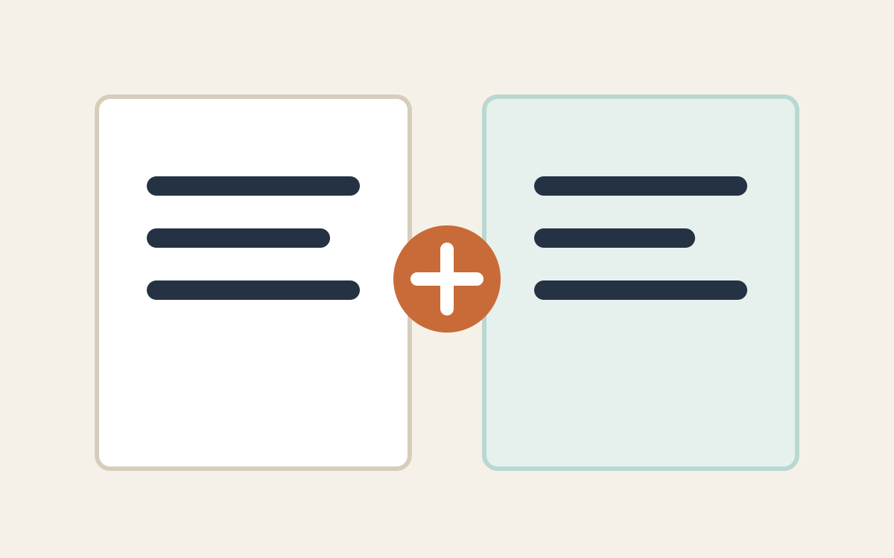
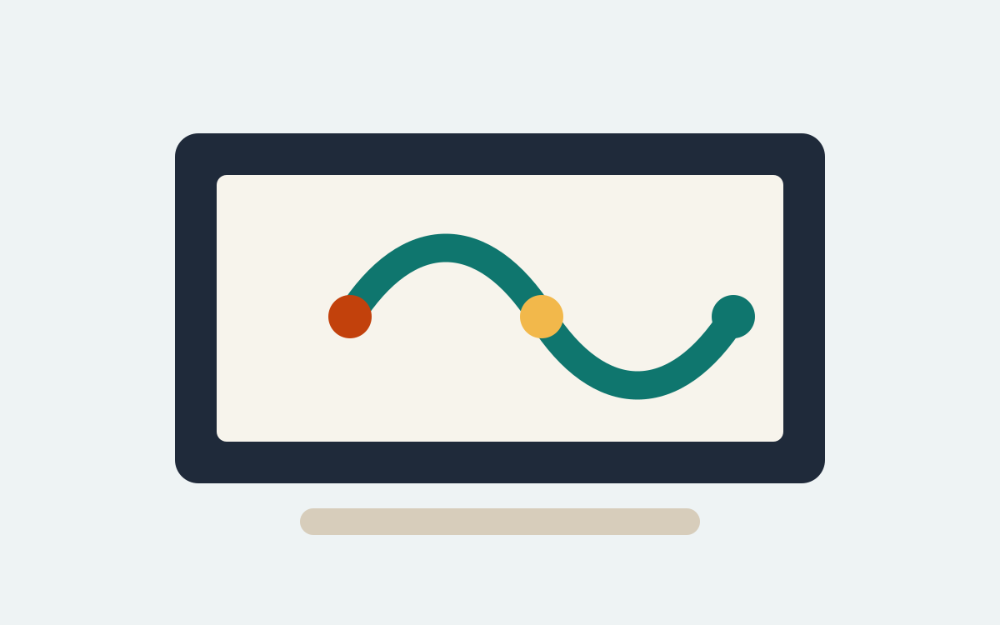
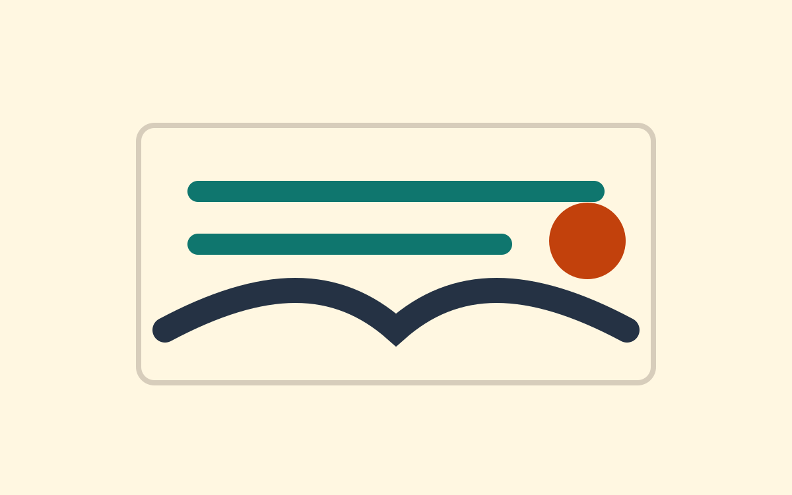
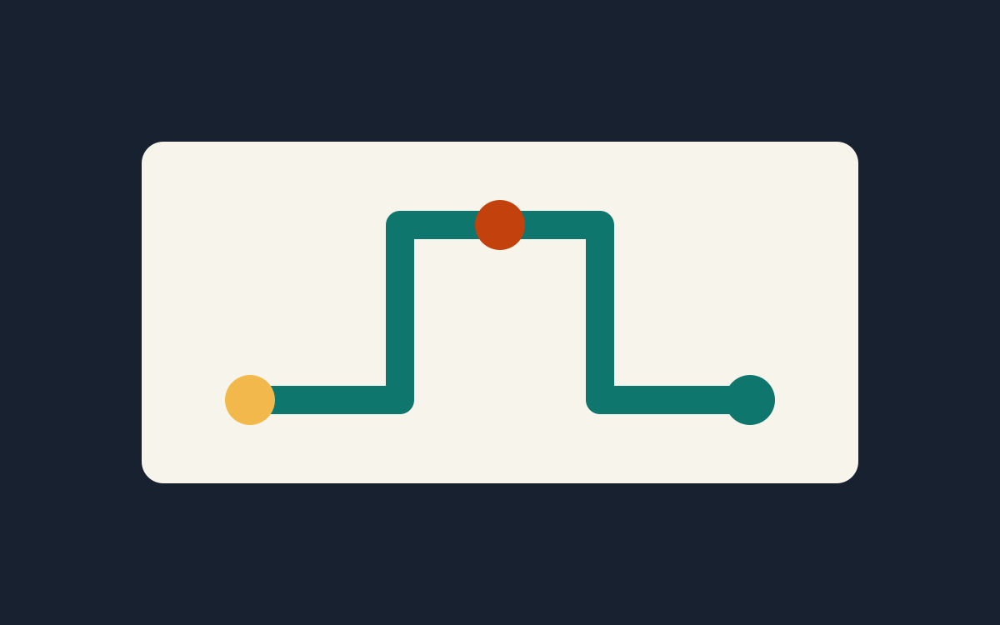
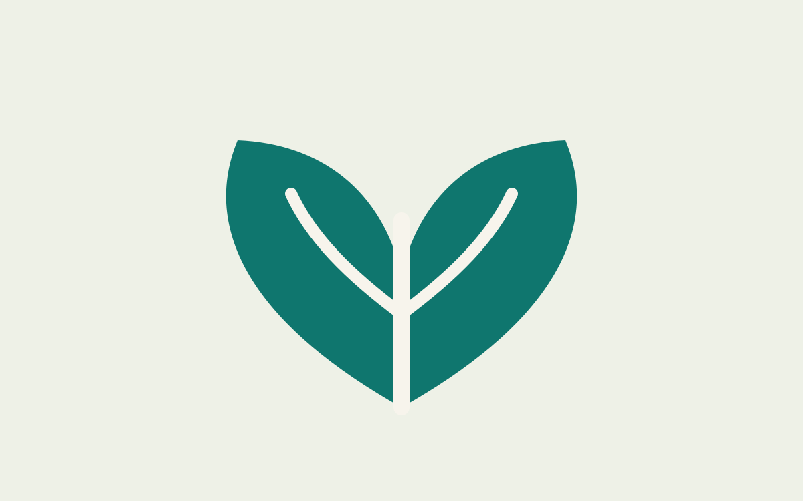

A2-B1 | Culture
Why Do People Still Read Paper Books?
Reading habits, attention and the personal value of paper books.
Read articleTheReadingLion
TheReadingLion is a classroom reading tool for English learners. Articles are organised by CEFR level and topic so students can choose texts that match their needs, interests and learning goals.
Browse by level
Browse by topic

Reading habits, attention and the personal value of paper books.
Read article
A student-friendly text about AI tools, responsibility and learning.
Read articleSleep, movement, food and habits that support concentration.
Read article
Planning, small actions and reducing stress through clarity.
Read articleAccents, stories, patience and intercultural listening.
Read article
Future careers, flexible skills and communication.
Read articleTime, place, goals and realistic reading habits.
Read article
Daily choices, packaging and environmental awareness.
Read articleAudio stories, listening practice and personal choice.
Read articleDistraction, focus and attention in digital environments.
Read articleKnowledge, judgement and education in uncertain times.
Read article